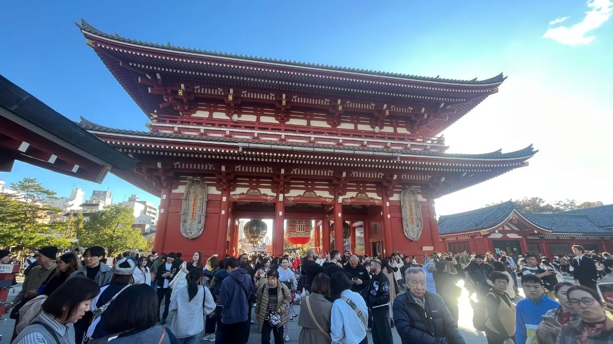
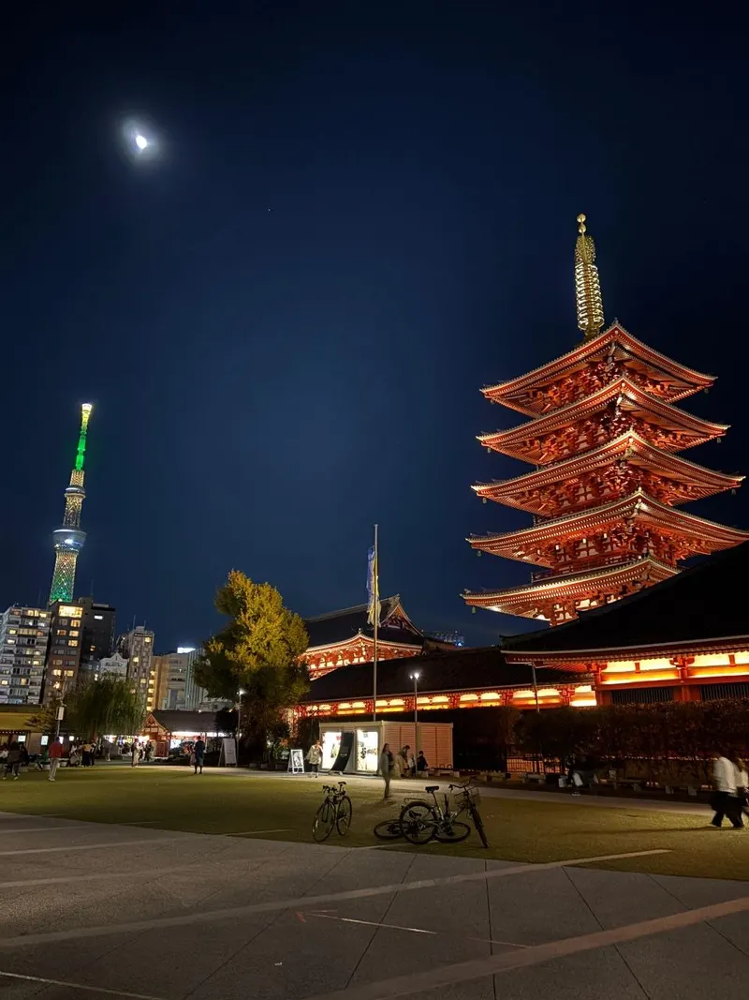

The short answer
Senso-ji, in the district of Asakusa, is Tokyo’s oldest temple, founded in the 7th century. Entry is free. You walk under the Kaminarimon gate with its giant red lantern, along the Nakamise shopping street, through the Hozomon gate to the main hall and the five-storey pagoda. The grounds are open 24 hours; the main hall from 6:00 to 17:00 (6:30 from October to March). Go early in the morning or after dark: in the middle of the day it is one of the busiest places in Japan.
The classic route through Senso-ji
1. Kaminarimon (Thunder Gate). The entrance everyone photographs, with a huge red paper lantern and the statues of the gods of wind and thunder. It is right outside Asakusa station.
2. Nakamise-dori. A street of about 250 metres lined with small shops selling snacks, fans, sweets and souvenirs. Prices are touristy but the atmosphere is unique. Most shops open around 9–10 am and close in the early evening.
3. Hozomon gate. The second, even bigger gate, with giant straw sandals hanging on the back. From here you see the pagoda on the left.
4. The main hall and the pagoda. The main hall is dedicated to Kannon, the goddess of mercy. In front of it is the large incense burner: people wave the smoke towards themselves for good health. The five-storey pagoda cannot be entered, but it is beautiful from every side.
5. Asakusa Shrine. Just behind the main hall, on the right, a quieter Shinto shrine that many visitors miss.

Opening hours and when to go
| What | Hours | Tip |
|---|---|---|
| Temple grounds | Open 24 hours | Free at any time |
| Main hall | 6:00–17:00 (6:30–17:00 from October to March) | Arrive at opening for the morning prayers and empty spaces |
| Nakamise shops | About 9:00–19:00, varies by shop | Late afternoon is the busiest moment |
| Night illumination | From sunset until about 23:00 | The best photos, with very few people |
Temple etiquette
- Purify your hands at the water basin (chozuya): left hand, right hand, then a little water in your cupped hand for the mouth. Do not drink from the ladle.
- Praying: throw a coin in the offering box, put your hands together and bow. At Buddhist temples like Senso-ji you do not clap; clapping is for Shinto shrines.
- Omikuji fortunes: pay about 100 yen, shake the box, take the paper with your number. If the fortune is bad, tie it to the rack and leave it behind.
- Eating while walking on Nakamise is discouraged: eat in front of the shop where you bought the snack.
- Photos: fine in the grounds; be discreet near people praying.
For more good manners, read our Japanese etiquette guide.
What to eat in Asakusa
- Ningyo-yaki: small sponge cakes filled with red bean paste, baked in front of you.
- Kaminari-okoshi: crunchy puffed-rice sweets, the classic Asakusa souvenir.
- Melon pan and age-manju (fried buns) from the stalls around Nakamise.
- Tempura and soba in the old restaurants of the side streets.
- Hoppy-dori: a street of cheap izakaya with outdoor tables, lively in the evening.
To order without stress, use our Japanese restaurant phrases and what to eat in Japan.
What to see nearby
- Sumida River and Tokyo Skytree: cross the river for the classic view of the Skytree; you can walk there in about 20 minutes.
- Kappabashi: the “kitchen street”, with knives, tableware and the famous plastic food samples.
- Ueno: one metro stop on the Ginza line, with its park, museums and the Ameyoko market.
- Rickshaw ride: runners in traditional clothes offer short tours of the old streets.
- Kimono rental: many shops rent kimono for a few hours, perfect for photos at the temple.
How to get there
- Metro: Asakusa station on the Ginza line (from Ueno, Ginza and Shibuya) and the Toei Asakusa line (direct from Haneda and Narita airports on some trains). The gate is about 5 minutes on foot.
- Tobu railway: also stops at Asakusa, useful for Nikko.
- Pay with an IC card: Suica or PASMO work on all these lines. See our Suica and PASMO guide.
Practical tips
- Bring some cash: many stalls, the omikuji and the offering box only take coins and notes.
- Combine it with Ueno in the same half day: they are close and on the same metro line.
- New Year: Senso-ji is one of the busiest places for the first temple visit of the year. See New Year in Japan.
- Building your Tokyo plan? Start from Tokyo in 3 days and where to stay in Tokyo.
Plan your visit to Asakusa
Some links are affiliate links: booking through them costs you nothing extra and helps keep 687 free.
Your Tokyo days, planned and adaptable.
In 687 Japan you plan the trip day by day with the weather, and Nearby finds food, cash machines and toilets around you. If plans change, NOW rebuilds the rest of the day from where you are.
Sources
- Senso-ji – official website
- GO TOKYO – Senso-ji (official Tokyo tourism)
- Tokyo Metro – Ginza line
- Toei Subway – Asakusa line
Checked against these official sites in November 2026. Prices and rules can change: always confirm before you travel.